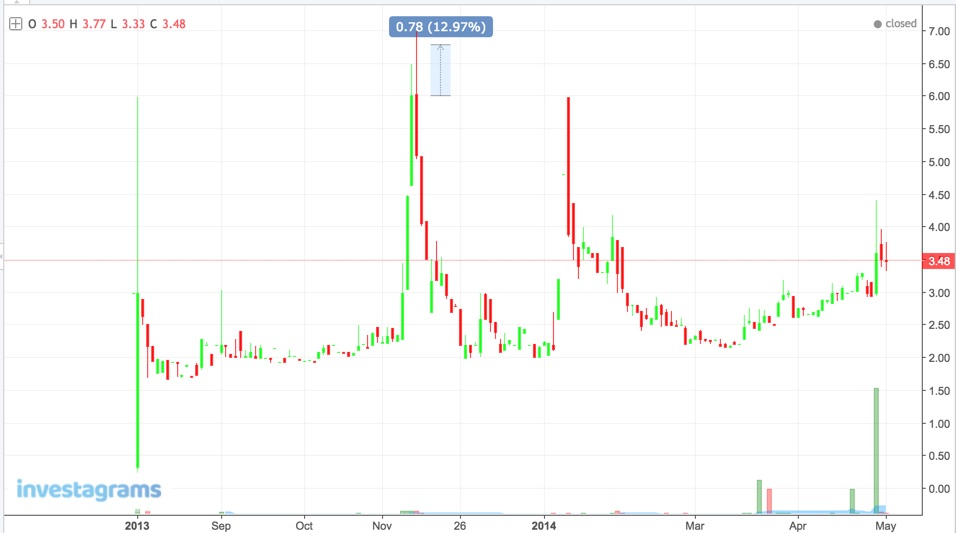

I've had goals that I've achieved in the past.
I'm in a position today where I can tell myself that...
I'm here and now because of what I focused on with my work ethic...
...the 80-hour work weeks for several years have finally paid off.
I'm also here and now to tell myself that trading is my next target.
The first stock I bought was $NXT on November 13, 2013, at around EOD.
18 hours after that, I should have been in my 8:30 AM to 10:00 AM class.
But, the universe conspired. The professor was absent.
I went back home, and sealed my profits before it would have turned to dust.
I'm not fooling anyone. This was pure luck.
I had a series of good lucks, one of which was the $TEL trade. I gained P600 with my 25K capital.
I was on some foums where I've read other trader's results.
The difference was they got 600k out of their 2.5M capital.
That's when I mistakenly told myself that what I was doing wouldn't take me anywhere.
That I would need capital to make trading my primary source of income.
That's when I initially planned my career shift.
After spending almost 6 years with my supposedly 4-year course, I was ready to cut my loss
And dive into the world of IT, for better gains in less time.
This season was all about just getting through my god damn thesis to at least mitigate the lost time I've spent in College.
At least, I'll get out with a diploma.
I've spent my time planning for the months and years ahead.
I settled with the Ops side of IT.
The side of IT that is certification-driven.
The mindset was I didn't graduate with a technically related degree.
But, at least, I can be hired based on certifications.
Spent this time studying in advance for the bootcamp I planned to attend.
Got my certification early, got hired by a company, and was scheduled to start on January 2015.
This year was hell..
..A calculated hell.
It was all planned
Even if the execution meant destroying my body in the process.
The hard work in 2015 paid off.
My monthly income almost tripled by transferring to another company.
I spent the first few months learning the process of my new job.
I was considered a top performer until inevitably, I got bored.
Boredom out of my current job lead me to flirt with another IT fields: application development.
I fantasized about the thought of freedom, and application development seemed to be synonymous with it.
It seemed to be the career that would be analogous to my proverbial retirement.
That is, I imagined to be a developer who was working from home.
And be someone who loves doing his work, such that it stops being considered as a job.
Application development, was, for me, a field where you can be judged by your results.
Not by the hours you put in.
You can create an application that's worth X amount of dollars.
And it would be up to your capability to finish it either in a month or in a week.
Studying application development came to a halt.
I got distracted with a potential opportunity that would have given me a 60% increase in monthly income.
I got through the screening process.
But, for some reason, it did not materialize.
I got my sideline as an application developer.
On weekdays, 9 hours were spent inside the office, plus an average of 2 hours travel time
11 hours total, with an ideal 8 hours of sleep
Totalled to around 19 hours of time committed for maintenance.
The remaining 5 hours were spent for application development
The sideline continued, eventually leading to deploying an app to the App Store, Play Store, and an internal CMS for my employer.
Another potential company transfer presented itself, with an upside of more than doubling my current monthly income.
But then again, it didn't materialize.
I was the first to get through their more rigorous technical screening process, as told by a friend.
But, my asking price may have been considered too steep.
Maybe that's the problem with knowing my value.
I know what I can produce.
I know I shouldn't be judged by the lack of years of experience.
Another breakthrough!
Finally, I got a full time job working from home as a developer.
After catching up to the knowledge required to survive in my new job..
I'm now designing my days again so I'd have time to grow as a trader.